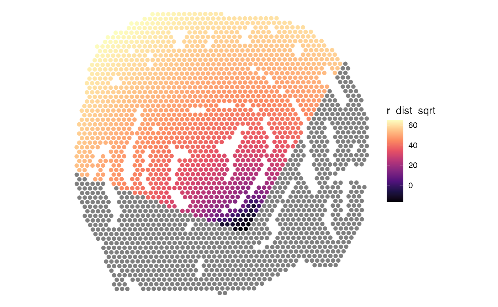

Calculate radial distances from a region border
radial-distance.RdCalculates the radial distances to all spots from the borders of a selected defined region.
Usage
RadialDistance(object, ...)
# S3 method for default
RadialDistance(
object,
spots,
angles = NULL,
angles_nbreaks = NULL,
remove_singletons = TRUE,
convert_to_microns = FALSE,
verbose = TRUE,
...
)
# S3 method for Seurat
RadialDistance(
object,
column_name,
selected_groups = NULL,
column_suffix = NULL,
angles = NULL,
angles_nbreaks = NULL,
remove_singletons = TRUE,
convert_to_microns = FALSE,
verbose = TRUE,
...
)Arguments
- object
An object
- ...
Arguments passed to other methods
- spots
A character vector with spot IDs present
object. These spots typically represent one particular tissue structure identified either by data-driven clustering or by the tissue histology.- angles
A numeric vector of length 2 specifying a "search interval" of angles to compute the radial distances for. Values between 0 and 360 are accepted where
angles[1] < angles[2]. The angles are defined in a clockwise manner, where right=0, down=90, left=180 and up=270. The angles are calculated relative to the region center and can therefore only be used when a single connected region is present. If there are multiple, spatially disconnected regions present, useDisconnectRegionsto split the spatially disconnected regions first.- angles_nbreaks
An integer specifying a number of intervals to cut the "search interval" into. This can be useful if you want to group radial distances into different directions from the region center.
- remove_singletons
Logical specifying if 'singletons' should be excluded. Spatially disconnected regions are not allowed when a "search interval" is defined, but single spots without neighbors are not detected as disconnected components. Single spots will most likely not interfere when calculating the centroid of the region of interest and can therefore be kept.
- convert_to_microns
Logical specifying if pixel distances should be converted to microns. This requires the
dbscanR package to be installed. When this option sis set to TRUE, the method will first attempt to estimate the center to center distance between adjacent spots which corresponds to 100 microns in Visium. The center to center distance will then be used to convert the radial distances. Note that if no spots are adjacent in the dataset or if any other data type than Visium is used, the distances will not correspond to micrometers.- verbose
Print messages
- column_name
A character specifying the name of a column in your meta data that contains categorical data, e.g. clusters or manual selections
- selected_groups
A character vector to select specific groups in
column_namewith. All groups are selected by default, but the common use case is to select a region of interest.- column_suffix
Suffix to column names returned in the Seurat object.
Scenario
The region of interest could for example be an isolated tumor in the tissue section surrounded by stroma. If we are interested in expressional changes from the tumor core and outwards, we can use radial distances to model such changes. Below are a few examples for how radial distances can be used to in address certain question in this scenario:
Identify genes that vary inside the tumor, e.g. tumor edge vs tumor core.
Identify cell types located at the tumor edge
Characterize the surrounding tumor microenvironment just outside the tumor edge
Identify cell types whose abundances change with distance to tumor
Algorithm
First, the border spots of the selected region is identified based on the
spatial network of nearest neighbors identified with GetSpatialNetwork.
For each spot outside of this border, the distance is calculated to its nearest border spot.
Spots located inside the selected region will have negative distances and
spots located outside of the selected region will have positive distances.
Search interval
The microenvironment of the region of interest might be extremely heterogeneous
depending on the direction from its center. For this reason, it can be useful to narrow
down the search area by defining a smaller angle interval with angles. Alternatively,
you can split the radial distances into an even number of slices with angles_nbreaks.
When using a predefined search interval, the region of interest (e.g. manual annotation)
should not contain multiple spatially disconnected regions. Angles are calculated from
center of the region of interest so it only makes sense to investigate one region at the time.
You can use DisconnectRegions to split a categorical variable that contains
multiple spatially disconnected regions.
default method
object should be a tibble with four columns:
'barcode' : character vector with spot IDs
'x', 'y' : numeric vectors with pixel coordinates
'sampleID' : numeric vector with sample IDs
If angles and/or angles_nbreaks are set, the function will return a
tibble with spot IDS, sampleIDs, the angle between the region center and
spots and the radial distances. If angles_nbreaks is provided, a
fifth column will be provided that groups spots into even intervals based on angles.
Otherwise, the default is to return numeric vector with radial distances
for all spots in object.
Seurat method
If object is is a Seurat object created with semla,
the results are returned to the meta.data slot.
See also
Other spatial-methods:
CorSpatialFeatures(),
CutSpatialNetwork(),
DisconnectRegions(),
GetSpatialNetwork(),
RegionNeighbors(),
RunLabelAssortativityTest(),
RunLocalG(),
RunNeighborhoodEnrichmentTest()
Examples
library(semla)
library(ggplot2)
library(patchwork)
library(RColorBrewer)
# Get coordinates
galt_spots_file <- system.file("extdata/mousecolon",
"galt_spots.csv",
package = "semla")
galt_spots <- read.csv(galt_spots_file) |>
as_tibble()
# read coordinates
coordfile <- system.file("extdata/mousecolon/spatial",
"tissue_positions_list.csv",
package = "semla")
coords <- read.csv(coordfile, header = FALSE) |>
filter(V2 == 1) |>
select(V1, V6, V5) |>
setNames(nm = c("barcode", "x", "y")) |>
bind_cols(sampleID = 1) |>
as_tibble()
# Select spots
spots <- galt_spots$barcode[galt_spots$selection == "GALT"]
head(spots)
#> [1] "AAACTGCTGGCTCCAA-1" "AACCTTTAAATACGGT-1" "AACGATAATGCCGTAG-1"
#> [4] "AACGTCAGACTAGTGG-1" "AACTAGGCTTGGGTGT-1" "AAGCATACTCTCCTGA-1"
# Calculate radial distances
radial_distances <- RadialDistance(coords, spots)
#> ℹ Removing 23 spots with 0 neighbors.
#> ℹ Extracting border spots from a region with 83 spots
#> → Detected 78 spots on borders
#> → Detected 83 spots inside borders
#> → Detected 2521 spots outside borders
#> ✔ Returning radial distances
gg <- bind_cols(coords, r_dist = radial_distances) |>
left_join(y = galt_spots, by = "barcode")
# Convert to sqrt scale
gg$r_dist_sqrt <- sign(gg$r_dist)*sqrt(abs(gg$r_dist))
# Make plot
p1 <- ggplot(gg, aes(x, y, color = r_dist_sqrt)) +
geom_point() +
scale_y_reverse() +
scale_color_gradientn(colours = RColorBrewer::brewer.pal(n = 11, name = "RdBu"))
p2 <- ggplot(gg, aes(x, y, color = selection)) +
geom_point() +
scale_y_reverse()
# Wrap plots
wrap_plots(p2, p1, ncol = 2) &
coord_fixed() &
theme_void()
# \donttest{
# %%%%%%%%%%%%%%%%%%%%%%%%%%%%%%%%%%%%%%%%%%%%%%%%%%%%%%%%%%
# Calculate radial distances for fixed angle interval
# %%%%%%%%%%%%%%%%%%%%%%%%%%%%%%%%%%%%%%%%%%%%%%%%%%%%%%%%%%
# NB: This should only be run on a single region! In
# this example, the disconnected regions have to be split first
disconnected_regions <- DisconnectRegions(coords, spots)
#> ℹ Detecting disconnected regions for 106 spots
#> ℹ Found 8 disconnected graph(s) in data
#> ℹ Sorting disconnected regions by decreasing size
#> ℹ Found 12 singletons in data
#> → These will be labeled as 'singletons'
spots_keep <- names(disconnected_regions[disconnected_regions == "S1_region1"])
# Calculate radial distances between 200-300 degrees
radial_distances <- RadialDistance(coords, spots_keep, angles = c(200, 300))
#> ℹ Removing 2 spots with 0 neighbors.
#> ℹ Extracting border spots from a region with 65 spots
#> → Detected 34 spots on borders
#> → Detected 65 spots inside borders
#> → Detected 2539 spots outside borders
#> ✔ Returning radial distances
#> ℹ Setting search area between 200 and 300 degrees from region center
gg <- coords |>
select(-sampleID) |>
left_join(y = radial_distances, by = "barcode")
gg$r_dist_sqrt <- sign(gg$r_dist)*sqrt(abs(gg$r_dist))
# Plot radial distances
ggplot(gg, aes(x, y, color = r_dist_sqrt)) +
geom_point() +
scale_y_reverse() +
coord_fixed() +
theme_void() +
scale_color_gradientn(colours = viridis::magma(n = 9))

# %%%%%%%%%%%%%%%%%%%%%%%%%%%%%%%%%%%%%%%%%%%%%%%%%%%%%%%%%%
# Calculate radial distances for multiple angle intervals
# %%%%%%%%%%%%%%%%%%%%%%%%%%%%%%%%%%%%%%%%%%%%%%%%%%%%%%%%%%
# NB: This should only be run on a single region! In
# this example, the disconnected regions have to be split first
disconnected_regions <- DisconnectRegions(coords, spots)
#> ℹ Detecting disconnected regions for 106 spots
#> ℹ Found 8 disconnected graph(s) in data
#> ℹ Sorting disconnected regions by decreasing size
#> ℹ Found 12 singletons in data
#> → These will be labeled as 'singletons'
spots_keep <- names(disconnected_regions[disconnected_regions == "S1_region1"])
# Calculate radial distances between 0-360 degrees and split
# these into 8 slices
radial_distances <- RadialDistance(coords, spots_keep,
angles = c(0, 360), angles_nbreaks = 8)
#> ℹ Removing 2 spots with 0 neighbors.
#> ℹ Extracting border spots from a region with 65 spots
#> → Detected 34 spots on borders
#> → Detected 65 spots inside borders
#> → Detected 2539 spots outside borders
#> ✔ Returning radial distances
#> ℹ Setting search area between 0 and 360 degrees from region center
#> ℹ Splitting search area into 8 interval(s)
gg <- coords |>
select(-sampleID) |>
left_join(y = radial_distances, by = "barcode")
gg$r_dist_sqrt <- sign(gg$r_dist)*sqrt(abs(gg$r_dist))
# Color slices
p1 <- ggplot(gg, aes(x, y, color = intervals)) +
geom_point() +
scale_y_reverse() +
coord_fixed() +
theme_void() +
scale_color_manual(values = RColorBrewer::brewer.pal(n = 8, name = "Spectral"))
# Plot distances
p2 <- ggplot(gg, aes(intervals, r_dist)) +
geom_jitter()
# Now we can group our radial distances by slice
p1 + p2
# }
library(semla)
library(ggplot2)
library(patchwork)
library(tidyr)
library(RColorBrewer)
se_mcolon <- readRDS(system.file("extdata/mousecolon", "se_mcolon", package = "semla"))
se_mcolon <- RadialDistance(se_mcolon, column_name = "selection", selected_groups = "GALT")
#> ℹ Running calculations for sample 1
#> ℹ Calculating radial distances for group 'GALT'
#> ℹ Removing 23 spots with 0 neighbors.
#> ℹ Extracting border spots from a region with 83 spots
#> → Detected 78 spots on borders
#> → Detected 83 spots inside borders
#> → Detected 2521 spots outside borders
#> ✔ Returning radial distances
# Plot results
p1 <- MapLabels(se_mcolon, column_name = "selection")
p2 <- MapFeatures(se_mcolon, features = "r_dist_GALT", colors = c("lightgray", "black"))
p1 | p2
# Plot expression as function of distance
sel_genes <- c("Clu", "Tagln")
gg <- FetchData(se_mcolon, vars = c(sel_genes, "r_dist_GALT")) |>
pivot_longer(all_of(sel_genes), names_to = "variable", values_to = "value")
# Plot features
p1 <- MapFeatures(se_mcolon, features = sel_genes)
# Plot expression as a function of distance
p2 <- ggplot(gg, aes(r_dist_GALT, value, color = variable)) +
geom_smooth(method = "loess", span = 0.2, formula = y ~ x) +
geom_vline(xintercept = 0, linetype = "dashed") +
theme_minimal()
# Combine plots
p1/p2
# It can also be useful to apply transformations to the distances
se_mcolon$r_dist_GALT_sqrt <- sign(se_mcolon$r_dist_GALT)*sqrt(abs(se_mcolon$r_dist_GALT))
MapFeatures(se_mcolon, features = "r_dist_GALT_sqrt", pt_size = 2,
colors = RColorBrewer::brewer.pal(n = 11, name = "RdBu") |> rev())